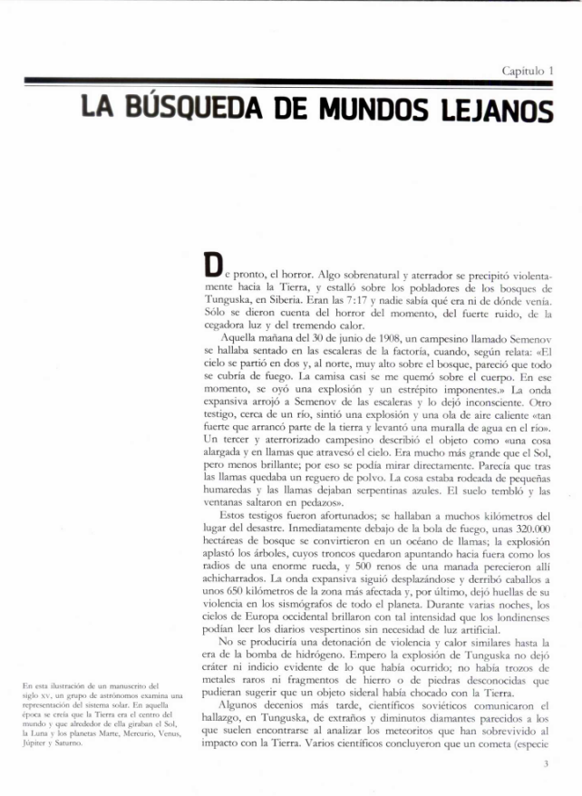
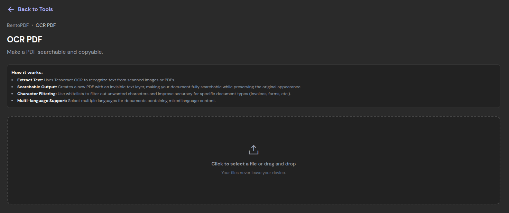
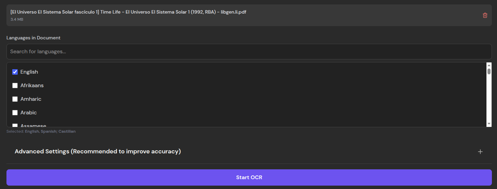
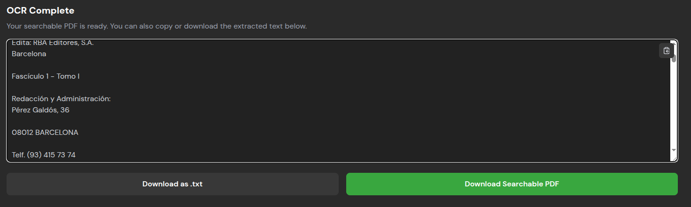
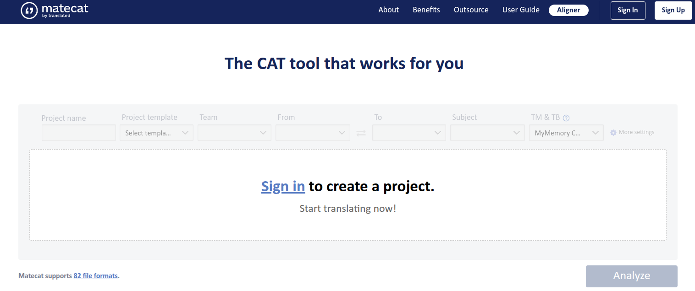
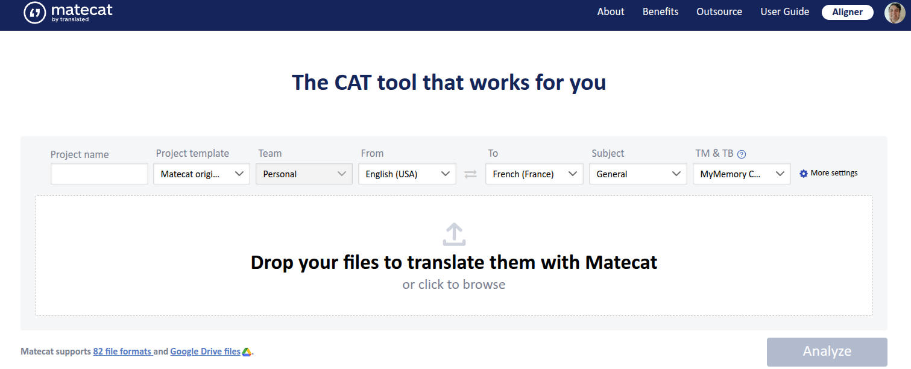
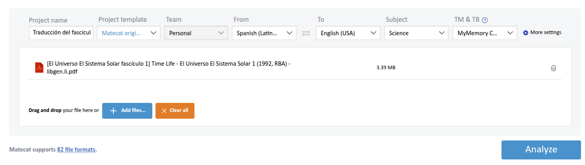
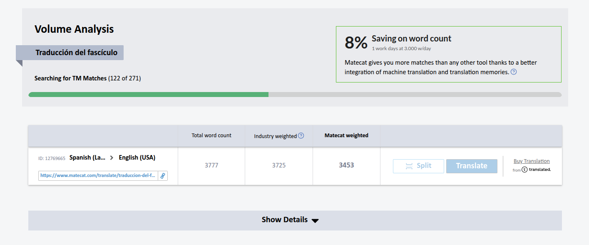

01 Introducción
Quizá sea viable gestionar un proyecto completo en la mente. Pero solo si se trata de una sola persona. Para mantener múltiples profesionales coordinados respecto a las tareas hechas y por hacer, es necesaria una herramienta de gestión. ¿Será suficiente una CAT Tool para llevar un proyecto completo de traducción? ¿O es inevitable el uso de un gestor de proyectos tradicional?
En esta entrada simularemos un encargo sencillo y compararemos las funciones que nos ofrecen dos destacadas herramientas: Trello (gestor de proyectos) y Matecat (CAT Tool).
02El proyecto: Fascículo sobre el sistema solar
Se nos ha asignado un fascículo sencillo sobre el sistema solar:

Qué amena lectura. Sin embargo, se trata de un archivo PDF cuyo texto no podemos seleccionar. Para elaborar la traducción será necesaria la ayuda de una herramienta de OCR (Optical Character Recognition: Reconocimiento Óptico de Caracteres en español). Más adelante abordaremos por qué es tan necesario este paso. Por los momentos, utilicemos la herramienta OCR de BentoPDF para convertir el PDF a un documento de texto fácilmente editable.

Tras seleccionar el archivo PDF, nos pedirá seleccionar los idiomas presentes en el documento. Seleccioné inglés y español:

Luego de pulsar "Start OCR", debemos esperar. Tras unos momentos, veremos el resultado. Podremos descargarlo como un archivo .txt:

El resultado es imperfecto. La primera página del fascículo tiene una ilustración bonita con estrellas que el OCR confundió por texto. Tras una corta revisión y edición, quedó así:

Ya estamos listos para abordar la primera herramienta.
03CAT Tool: Matecat
Las CAT Tools son herramientas de traducción asistida por computadora. Existen muchas, y todas tienen la misma misión: ayudar al traductor en su labor a través de memorias de traducción, gestores de terminología, alineadores de segmentos de texto, correctores ortográficos y demás. Entre las CAT Tools se encuentra Matecat, una herramienta gratuita que, a mi parecer, es excelente.
Excelente pero no perfecta. Veamos qué ocurre si utilizamos el archivo PDF original para crear el proyecto de traducción. Para ello, el primer paso es iniciar sesión:

Tras iniciar sesión, tenemos la opción de subir el archivo:

Configuremos las opciones. Asignamos nombre de proyecto, idioma origen e idioma meta y el campo temático.

Luego de pulsar "Analyze", Matecat aplicará su propio OCR al archivo PDF.

Tras unos segundos (esto depende del tamaño y complejidad del archivo), veremos el resultado. Un dato muy útil es que Matecat cuenta la cantidad de palabras del texto, por lo que podremos presupuestar al cliente con facilidad. A continuación, pulsamos "Translate".

Esta es la interfaz de traducción de Matecat. Como podemos ver, todo parece ir viento en popa. La primera palabra del texto es "UNIVERSO", y pudo identificarla correctamente:

Sin embargo, si hacemos scroll más abajo, veremos que tuvo confusiones serias que ralentizarán al traductor:

En cambio, subir el archivo .txt nos librará de dichos errores:

Ya podemos volver arriba y conocer mejor Matecat. El proceso básico es sencillo: traducimos la palabra de la izquierda y pulsamos "TRANSLATED". Matecat nos mostrará potenciales traducciones con base en el sudor y lágrimas de miles de traductores que colaboran para que la base terminológica general de Matecat sea cada vez mejor. Por ejemplo, "El Sistema Solar" viene ya traducido:

Matecat hace un buen esfuerzo en su traducción a máquina, pero es imperfecto. Por ejemplo, en este segmento, al traductor podría no gustarle "trail" como traducción de "reguero". La pestaña "TM Search" permite buscar alternativas:

También existe la pestaña "Termbase", que permite buscar términos en una base terminológica subida manualmente por el usuario.

Podemos añadir nuevos términos al glosario de manera sencilla. Permite añadir definición, el término en ambos idiomas, notas, ejemplos de uso, dominio y subdominio.

Además, la opción "Termbase" permite formalizar el glosario, en caso de que lo estemos creando por primera vez:

Matecat destaca bastante en este aspecto. En caso de que estemos trabajando con otros profesionales, podemos compartir el recurso (en este caso, un glosario) para que los demás puedan acceder a los términos y se pueda manejar de manera sencilla la consistencia terminológica a lo largo y ancho del proyecto.
Por ahora, hagamos clic en "New resource":

Tras dar nombre al glosario y confirmar, podemos ver diversas opciones adicionales:

Nos permite importar términos al glosario en formato TMX, exportarlo, compartirlo y eliminarlo. Es muy útil.
Matecat cuenta con otras herramientas útiles. Por ejemplo, al pulsar el botón "QA" en la barra superior, podremos ver las sugerencias de Lexiqa, su motor de control de calidad. En este caso, nos avisa que existen comillas de cierre, pero no de apertura. Las comillas de apertura se encuentran en un segmento distinto, por lo que esto no es un problema real, pero nunca está de más tener una máquina que le eche un ojo al texto, quizá en alguna ocasión sí falten las comillas.

El botón "QR" genera un reporte de calidad. Todavía no hemos trabajado en la traducción, por lo que en este caso, no tiene nada que reportar.

El reporte cuenta con varias señales útiles. Nos informa sobre el estilo, problemas con etiquetas (útil en la localización de videojuegos, por ejemplo), errores de traducción, consistencia terminológica y problemas lingüísticos varios. Además, se puede buscar por segmento, filtrar los problemas y abordarlos uno a uno.
El reporte de calidad tiene opciones adicionales para revisar, volver a la interfaz de traduccción y descargar el reporte en diversos formatos:

El botón de la lupa permite buscar términos de manera sencilla e incluso reemplazarlos automáticamente:

El botón del embudo permite filtrar los segmentos para hallar alguno en específico:

El menú de descarga permite descargar el borrador actual, el archivo original, el archivo XLIFF (para importar en alguna otra CAT Tool), y el archivo TMX con la memoria de traducción.

El menú de configuración tiene diversas opciones avanzadas:

El menú de la foto de perfil permite acceder a los proyectos. Aquí se puede renombrar el proyecto, ver cuántas palabras han sido traducidas y se puede asignar el proyecto a otro traductor:

Si seleccionamos "Assign job to translator", tendremos la opción de ingresar el correo electrónico del traductor que queremos asignar al proyecto. Además, podemos indicar la fecha y hora en que queremos que la traducción esté lista:

Por último, en el menú "Create new team" podemos crear un equipo para que múltiples traductores tengan acceso al mismo proyecto de traducción:

04Gestor: Trello
Trello es una herramienta de gestión de proyectos (o de cualquier cosa) muy popular. El primer paso es iniciar sesión:

Tras iniciar sesión, veremos el tablero de Trello. Me encargué de crear un sencillo ejemplo:

Gracias al botón "Add another list", podemos crear listas de tareas individuales. Por ejemplo, como la tarea "Procesar el OCR del texto original" ya está completada, la moví a la lista de tareas completadas. Lo mismo aplica para la tarea "Presupuestar el proyecto".
En este sencillo ejemplo, dividí las tareas del proyecto en 4 secciones: Tareas generales, segmentos por traducir, segmentos por revisar, y tareas completadas.
Si bien puede ser una herramienta muy útil para un traductor por sí solo, el verdadero poder de un gestor de proyectos como Trello es su capacidad de coordinar a múltiples personas. Esto se logra a través del menú "Share":

Añadir a un compañero es tan sencillo como añadir su dirección de correo electrónico y pulsar "Share". Otra opción es compartir directamente el link del tablero.
Luego, podemos hacer clic en alguna tarea y asignarla a alguno de nuestros compañeros. En este ejemplo, le asigné la tarea de avisar al cliente sobre el avance del proyecto.

Trello brilla en sus capacidades de comunicación y coordinación. Además del mensaje escrito que pude enviar a mi compañera, puedo etiquetar esta tarea como urgente, establecer una fecha límite, adjuntar archivos y crear una lista de subtareas específicas:

Nuestros compañeros podrán dejar comentarios en la sección de comentarios de la tarea:

Esas son las principales funciones de Trello. Tiene muchas más, como la automatización por reglas, entre otras, pero muchas funciones son de pago. Además, estas funciones básicas son suficientes para un proyecto de traducción.
05 Conclusión y reflexión
¿Qué herramienta es mejor?
¡Ambas! No hay herramienta mejor. Son herramientas distintas, con objetivos distintos, que podemos combinar para que se cubran las espaldas entre sí.
Matecat es espectacular para el proceso de traducción per se. Cuenta con glosarios, traductor automático, control de calidad, exportación de archivos en múltiples formatos, análisis de coincidencias y mucho más.
Sin embargo, sus capacidades como gestor de proyectos es bastante limitada: no permite asignar tareas que se escapen al proceso de traducción, como la conversión de un PDF a texto a través de OCR, la revisión del resultado de dicho proceso de OCR, solicitar a alguien que se comunique con el cliente, entre otros.
En esos aspectos, Trello es fantástico. Brinda un control granular de cada etapa del proceso, incluidas aquellas que se escapen al proceso de traducción como tal. Permite asignar tareas, comentar, establecer fechas, etiquetar la importancia de ciertas labores, adjuntar archivos relevantes, separar las tareas en subtareas, automatizar, y comunicarse con los miembros del equipo de manera mucho más clara y directa. Matecat sencillamente no cuenta con las herramientas para esto.
En la unión está la fuerza. Trello no tiene ni una sola de las herramientas de traducción que tiene Matecat. Y Matecat no brinda las posibilidades comunicativas y de coordinación que otorga Trello. Entre ambas herramientas, será pan comido gestionar un proyecto de traducción: comunicación eficiente, fechas claras, gestión de la urgencia de las tareas, traducción automática, memorias de traducción, glosarios y control de calidad.
06 Referencias
- Uso propio de Matecat y Trello.